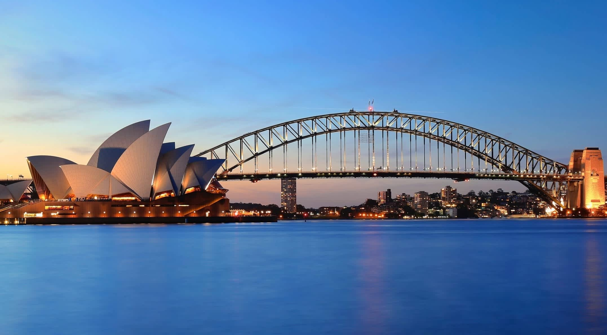
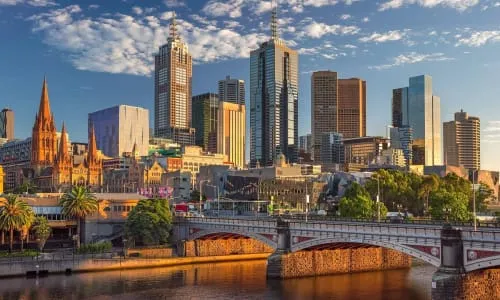
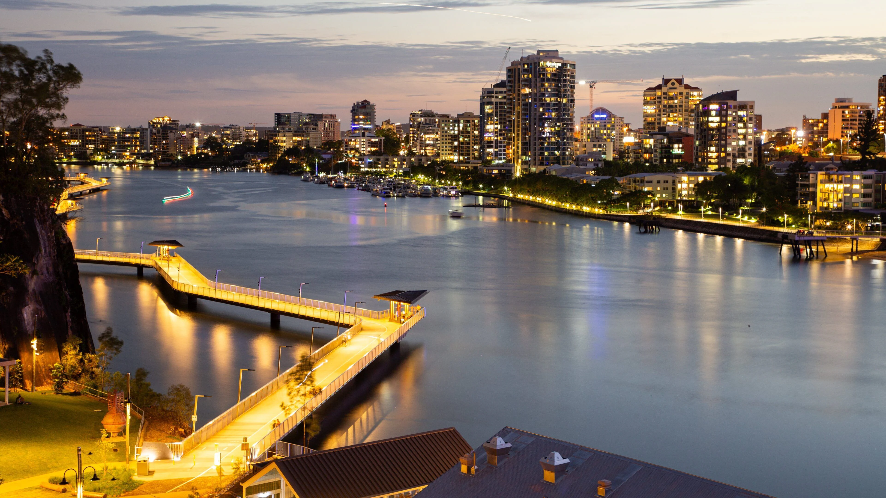

Sydney is a vibrant coastal city on Australias east coast, known for its stunning harbour, famous landmarks, and relaxed outdoor lifestyle. Visitors can explore world-class attractions like the Sydney Opera House and the Sydney Harbour Bridge, relax on beautiful beaches such as Bondi Beach, and enjoy a wide range of dining, shopping, and cultural experiences. With its warm climate, scenic waterfront views, and easy transport options, Sydney is one of the most popular travel destinations in Australia.

Melbourne is a vibrant city in southeastern Australia, known for its rich culture, arts scene, and diverse food experiences. Located in the state of Victoria, it is famous for its lively laneways, street art, and world-class events. Visitors can explore attractions such as Federation Square, enjoy fresh produce at Queen Victoria Market, or take in views along the scenic Yarra River. With its mix of historic architecture and modern design, excellent public transport, and reputation as Australia’s cultural capital, Melbourne is a must-visit destination for travelers.

Brisbane is a sunny and relaxed city in northeastern Australia, and the capital of Queensland. Located along the Brisbane River, it is known for its warm climate, outdoor lifestyle, and friendly atmosphere. Visitors can explore attractions like South Bank Parklands, enjoy scenic views from Story Bridge, or visit wildlife at Lone Pine Koala Sanctuary. With its riverside dining, cultural events, and easy access to nearby beaches and islands, Brisbane is a great destination for travelers looking to relax and explore.
